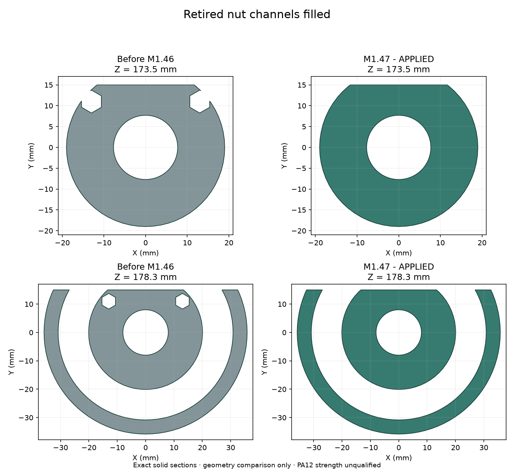
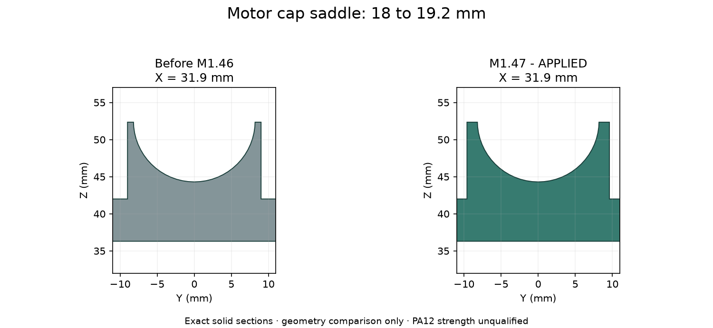

V1.2-M1.51：前后分壳已采用。 当前模型、装配和检查。下方早期研究按各自版本阅读，不能用于当前上下壳工序；完整线束仍未完成。
V1.2-M1.50：CAM两处排线入口已同步到主模型。 本轮交付。下方研究保留其原始版本；完整线束及结构候选仍未完成或未采用。
V1.2-M1.49：6806颈部与压板孔壁修正已应用。 当前交付 ·
新轴承试配片。下方旧研究按其记录版本阅读；完整线束仍未完成。
V1.2-M1.48：相机上沿和CAM内六角螺钉已应用。 查看当前交付。下方旧研究按其记录版本阅读；相机间隙及CAM螺钉不再待确认。完整线束仍未完成。
最新：完整装配与颈部补查
上部穿入/回位/入座/弯线与颈部R10独立候选已通过各自连续检查，未应用主模型。新顺序先装22件偏航与舵盘、再装14件头托与CAM，有限刚体路径通过。四根名义全长、153–162mm上方暂存线尾及共同PH插头已建入，身体段供线动作仍有间隙/相交问题。扎带、真实端子入壳、另7根跨关节线/FFC、完整连续顺序仍未完成。CAM内六角螺钉已于M1.48采用；裁线图未放行。
查看剖面和检查范围。下方保留历史阶段。
头部排线与动态线
查看新增核对：区分固定排线与跨关节线；相机完整排线长度及动态线束资料仍缺。主模型保持。
电源板和头部接线最新交接
C4机械接收完成：112封装、280焊盘、147过孔接口保持；收到电源板逐项视觉复核。实际头部尾线及带线维护仍待定，候选未应用。
最新固定线装配候选
H01–H04 共14根线已通过静态、130头部姿态和407身体装配位置检查。其余分支、绑束、真实出线及松量仍未完成；主模型保持。
返回主模型两处修正已应用
M1.47 · 本体16件打印件 · 运动/后接口P5R7，电源P5R6，IMU P5R4
已按确认的推荐执行：应用两处局部修正、先筛选现成软轮胎、将扩展电气要求发送给硬件对话。Blender、STL、预览及装配视频已同步。
1. 取消废弃孔槽
转台与U托合并后，旧连接孔和螺母通道已无用途。本次从生成源头取消，消除约0.04mm的残边；轴颈、轴承和限位保持。以下右图就是已采用的实体，当前模型与候选的实体差为0。

2. 加宽轮驱底盖轴承座
轴承座深度18→19.2mm，两侧各增加0.6mm，对应上座调整装入间隙。保持原轮轴及紧固件，未增加打印件或凸耳。底盖拆卸、轮驱拆装和工具路径检查通过。

改动范围与候选实体对比 · 当前Blender · 更新后的装配视频
3. 轮胎与电气输入
现成轮胎已完成首轮厂家筛选，尚未找到尺寸与接口均可直接沿用的型号。最接近的BaneBots成品轮仍需中心接口、重量范围和国内采购资料；查看产品对比。主模型轮径仍为105mm。
充电、电阻、保险、断电/物理急停、维护托架联锁、线材端子及FFC要求已发给“建立 MORI 硬件开发项目”对话，清单与发送状态已记录。现已收到A2增补，J10独立空间筛查仍发现板上阻挡，正式板卡保持不变。
到货前线束检查进展
H01–H03六根身体导线已有保持支架的名义试排，查看候选与检查范围。J10 A3历史复核已反馈硬件；带线拔插仍未完成；新 C3 候选连通与原生规则检查已通过；18个PH接口已有独立修孔候选，尚未正式替换。两个研究都没有替换主模型。
仍需完成
反力夹口的薄边与初次装入问题仍未关闭，本次没有采用失败的夹口候选。其余线束、未选元件、厂家传动/插接资料和质量预算仍需完成，不能表述为“只等实物”。
| 项目 | 状态／责任 | 具体缺口 |
|---|
| 反力夹口初次装配 | BLOCKED
机械；依赖舵盘接口定型 | 反力夹口局部薄边及初装仍未修复。M1.47当前实体复核：直柄工具与头座相交约9.26mm³，反力件上移2mm与头座相交约18.13mm³；只是两条具体路线失败，不表示不存在其他方案。未采用失败的夹口候选；最终舵盘资料仍缺。 依据 |
| 完整线束 | BLOCKED
机械＋硬件线材输入 | C5独立候选已通过11根局部导线、130姿态的实体检查、头壳净距与过渡壁厚采样，最小已查头壳名义间隙0.420mm、过渡侧壁采样约2.228mm；局部无新增软线的轴承/压板/螺钉装入和工具路径通过。需将偏航轴承20×32×7改为30×42×7并调整3件现有打印件，候选尚待用户确认，未应用主模型。完整端部连接、实际线材/FFC、固定与应力释放、完整带线装配及供应商制作图仍未完成。 最新依据 |
| 相机支架上沿及 CAM 螺钉 | PASS
已应用 M1.48 | 按用户确认完成上沿降低0.6mm和四枚M2×5内六角螺钉替换，局部、运动与工具检查已完成。当前交付；本项不再属于待办，实物配合仍待验证。 |
| 未定采购件与安装 | BLOCKED
机械＋硬件对话；现成软轮胎路线已确认 | 现成软轮胎未定型。A7/C4已核对112封装、280焊盘、147过孔及机械接口同C3/A3；收到电源板39项视觉处置、70条引出说明和ERC/DRC零项报告。真实出线、带线取件及装后JP70/TP71维护仍未定。C4与PHC1均未应用正式板或主模型。 依据 |
| 传动与插接资料 | BLOCKED
厂家资料＋机械/硬件 | SCS0009舵盘/短轴锁紧及线序视图、S288输出自攻螺钉、WeAct E孔针与插接长度、PHR8真实出线仍缺。A7补齐37行头部电气针脚及SH/GH目录候选；实际插合视图、相机完整FPC、USB尾线和压接过渡未确定，不能按目录候选冒充实物配套。 依据 |
| 质量与驱动预算 | BLOCKED
机械＋硬件工作点 | M1.47名义质量估算1.324kg仍超过1.0–1.2kg工程目标。A2两颗未布置制动电阻另计标称3.8g，候选部分合计1.327kg；未选模块、完整线束和热隔离固定仍缺，未修改主模型COM或宣称动力学通过。 依据 |
| 实物与打印验证 | NOT_TESTED
到货/试件后 | CAM/相机照片估计细节、喇叭安装耳、电池与出线、排针排母实际插接、PA12配合和紧固、承载/蠕变/冲击、声学、温升与平衡需实物。 依据 |
本轮检查与生成依据
- 取消废弃转台孔槽；轮驱底盖轴承座18→19.2mm且上座同步。3件与审核候选完全一致，206件其余实体几何和位置保持，零件数量不变。
- 主模型、STL、当前全部渲染及电子细模同步；主检查124 PASS / 0 FAIL，17 BLOCKED / 19 NOT_TESTED仍保留。21/21候选STL拓扑通过。
- M1.47-A1，82.5秒、1980帧、22章，源模型及路径回读通过；反力夹按预装总成演示的限制保留。
- 209实体质量覆盖及390姿态计算已基于M1.47重算；质量目标与执行器资格未获放行。
- 4类具名厂家产品已比对，尺寸及未知接口分开记录；没有套用其他产品尺寸或改变主轮径。
- 扩展电气输入清单已发送到既有硬件对话，并收到A2分项资料；16个正式原生PCB文件哈希保持。J10失败候选的独立机械包络筛查已完成，未应用。
当前模型SHA256：bcaa5736a8cdf43441a6a83a6cb69606546cc01d2c0d28d98f4c09383e07368f
PROTOTYPE / UNVALIDATED · 几何检查不等于PA12强度、实际配合或整机能力放行。
软轮候选空间复核
查看三种尺寸与位置的对比：最近尺寸候选直接替换会将轮壳间隙降至2.84 mm、腹部离地降至18.3 mm；仍缺轮毂与轴端接口，主模型保持。
相机支架上沿间隙候选
查看前后对比与剖面：上沿整条降低0.6mm，模型间隙约0.357mm，保留1.2mm名义上壁。原独立候选的限位、装入和连续合拢检查通过；用户已确认，本项现已应用 M1.48，见页面上方当前交付。
身体端插头转动路径
查看本轮范围与结果：保留14根身体导线，增加24种正交朝向。限时搜索暂未找到完整路径；完整供线与装配次序仍需继续完成。
H02先装：线长复核后的工序候选
查看线长问题和新走向：H02较低走向提前连接，201个开敞装入位置、408个身体位置与130个头部姿态通过。H01/H04的10根后装导线及其余线束仍未完成；主模型保持，裁线图未放行。